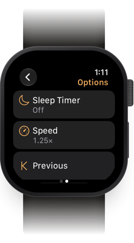

Lecteur de livres audio pour iPhone, iPad et Apple Watch
Pour les livres audio que vous possédez déjà.
Écoutez vos fichiers de livres audio M4B, MP3 et autres sans DRM avec leurs chapitres, et reprenez là où vous en étiez sur chaque appareil.


Comment ça marche Apportez vos propres livres audio.
-
Récupérez vos fichiers
Des livres audio sans DRM achetés sur des boutiques comme Libro.fm et Downpour, vos CD numérisés ou des classiques du domaine public sur LibriVox.
-
Importez-les
Depuis Fichiers, iCloud Drive, AirDrop ou un ordinateur. Un livre en plusieurs parties n’en forme plus qu’un.
-
Écoutez partout
Votre position, vos étagères et vos signets vous suivent sur iPad, Apple Watch et en voiture grâce à votre propre iCloud. Sans compte ni serveur.
Lit les formats M4B, M4A, MP3, AAC, FLAC, WAV, AIFF, Ogg Opus et MP4. Les fichiers AAX d’Audible ne se lisent que dans l’app Audible.
Lecteur Fait pour les longs livres.
-

Chapitres
Passez d’un chapitre à l’autre et voyez où vous en êtes dans chacun. La liste complète est à un geste.
-

Vitesse
De 0,5× à 6× par pas de 0,05, avec le temps restant à chaque vitesse.
-

Minuteur de veille
De cinq minutes à la fin du chapitre, avec le compte à rebours sur l’écran verrouillé.
-

Signets
Gardez un moment d’un toucher, avec une note pour dire pourquoi.
Et aussi des sauts de 5 à 45 secondes, un léger retour en arrière à la pause et une lecture qui reprend après les appels et les alarmes.

Bibliothèque Des étagères, comme dans une vraie bibliothèque.
Des étagères dans des étagères. Sanderson, puis Cosmere, puis Mistborn. Imbriquez-les aussi loin que votre collection l’exige.
Retrouvez n’importe quel livre. Cherchez par titre, auteur et étagère, ou n’affichez que vos livres en cours.
Apple Watch Laissez votre iPhone à la maison.
Envoyez un livre sur votre Apple Watch avant de courir, ou laissez l’iPhone dans votre poche et pilotez‑le depuis votre poignet. Comment ça marche sur Apple Watch



CarPlay et Siri Les mains sur le volant.
Reprenez là où vous en étiez, ou parcourez vos étagères. Puis demandez, tout simplement.
- « Recule de 30 secondes. »
- « Chapitre suivant. »
- « Arrête‑toi à la fin de ce chapitre. »

Et plus encore.
-
Raccourcis
Des actions pour la lecture, les chapitres, la vitesse, les signets et le minuteur.
-
Écran verrouillé
Le minuteur y fait son compte à rebours, ainsi que dans la Dynamic Island.
-
Widgets
La lecture en cours sur l’écran d’accueil, et des commandes dans le centre de contrôle.
-
Statistiques d’écoute
Par semaine, mois et année, avec un bilan chaque janvier.
-
Chaque détail
Titres, auteurs et couvertures depuis Photos ou Fichiers, à votre guise.
-
Exporter
Toute votre bibliothèque vers Fichiers, signets et notes compris.
-
Spotlight
Trouvez un livre depuis la recherche de l’écran d’accueil.
-
Huit langues
Avec son propre réglage de langue.
Confidentialité Pas de compte. Pas de pub. Pas de suivi.
Aucun abonnement pour écouter les livres que vous possédez. Votre bibliothèque vit sur vos appareils et dans votre propre iCloud, et les étagères que vous masquez restent protégées par Face ID.
Sur l’App Store, l’étiquette de confidentialité de Novelwave indique « Données non collectées ». Lire la politique de confidentialité
Avis de l’App Store Ce qu’en disent les auditeurs.
-
★★★★★
“I open the app and all my audiobooks are right in front of me, ready to play, with all the listening tools I need and 0 clutter.”
DaveAsh90 · États‑Unis
-
★★★★★
“This app does everything it needs to and nothing it doesn’t. A sleek, simple interface and enough playback customisation to allow many different listening styles.”
Alastair Stone · Royaume‑Uni
-
★★★★★
“I tried a similar app, but the speed settings & sleep timer options for Novelwave beat the competition. (Stop at end of chapter = genius!)”
hollyreviewsapps · États‑Unis
-
★★★★★
“I tried several other apps and this one is by far the most responsive and reliable.”
nonetaat · États‑Unis
-
★★★★★
“Just enough customization and features to make the player disappear into the background while enjoying the audiobook.”
Throog · États‑Unis
-
★★★★★
“Indie dev, zero data collection and telemetry, responsive to feedback.”
Massaholic · États‑Unis